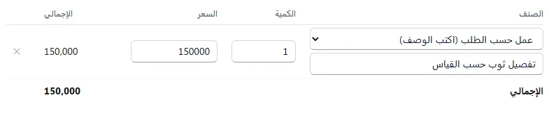

التصنيع والمنتجات المركّبة
لمن يبيع منتجاً مؤلفاً من قطع، أو عملاً لا صنفاً جاهزاً، أو يصنع منتجاً من مواد، أو يفكّ صنفاً إلى أجزاء.
- منتج مؤلف من قطع (قلم = جسم + غطاء)
- عمل حسب الطلب
- التصنيع والتفكيك
- كم أربح من المنتج؟
- الجودة: فحص ورفض وإتلاف
- الصيانة: الآلات والسيارات
منتج مؤلف من قطع (قلم = جسم + غطاء)
تبيع «قلم» في الفاتورة، وفي المخزون هو جسم وغطاء. سجّل القطع أصنافاً عادية، والقلم صنفاً بوصفة:
- أضف «جسم القلم» و«غطاء القلم» أصنافاً عادية، واشترِها كالعادة.
- أضف صنف «قلم» بسعر بيعه، وعلّم بلا مخزون.
- من التصنيع والتفكيك ← قوائم المواد أنشئ قائمة للقلم: جسم 1، غطاء 1.
- بِع «قلم» من الفاتورة أو نقطة البيع أو الجوال: ينقص جسم وغطاء من المخزون وحدهما، وتكلفتهما هي تكلفة القلم في الربح.
مرتجع القلم يعيد القطعتين إلى المخزون. وإن كنت تجمّع القلم مسبقاً وتخزّنه جاهزاً فاتركه صنفاً عادياً واستعمل أوامر الإنتاج. قسم التصنيع لا يظهر؟ فعّله من الأقسام.
عمل حسب الطلب
- افتح فاتورة بيع جديدة واختر الزبون.
- في خانة الصنف اختر عمل حسب الطلب (اكتب الوصف) واكتب وصف العمل وسعره، مثل «تفصيل ثوب حسب القياس».
- في المواد المستعملة أضف ما استهلكه العمل من المستودع (قماش، خيطان، أزرار).
- اضغط حفظ. تخرج المواد من المخزون بتكلفتها، فيظهر ربح الفاتورة الحقيقي.
على الجوال: في فاتورة بيع اضغط عمل حسب الطلب واكتب الوصف والسعر، والمواد في المواد المستعملة.

التصنيع والتفكيك
من التصنيع والتفكيك:
- قوائم المواد: ما يدخل في وحدة واحدة من المنتج. النوع تجميع (بندورة ومطربان ولصاقة تصير دبساً) أو تفكيك (محوّل يطلع منه نحاس وحديد).
- أوامر الإنتاج: أنشئ أمراً بالكمية، ثم بدء التنفيذ، ثم إنهاء الأمر واستلام الإنتاج بالكمية السليمة والهدر وتكلفة العمالة ومصاريف التشغيل. تخرج المواد وتدخل المنتجات بتكلفتها كلها، فتظهر تكلفة الوحدة الحقيقية.
- تخطيط المواد MRP: ما ينقصك من مواد لأوامر الإنتاج المفتوحة.
على الجوال: التصنيع فيه الثلاثة: أوامر الإنتاج (اضغط أمراً لتكتب الكميات الفعلية والهدر وتنهيه)، وقوائم المواد، وتخطيط المواد مع زر أمر إنتاج لما ينقص.
كم أربح من المنتج؟
في قوائم المواد اضغط احسب الربح تحت المنتج (على الجوال: اضغط قائمة التجميع): تكلفة كل مكوّن بتكلفته في المخزون (متوسط أسعار شرائه)، وتكلفة القطعة، وأمام سعر البيع يظهر الهامش. أضف أجور العمل أو مصاريف أخرى لترى الربح الصافي.
الجودة: فحص ورفض وإتلاف
قسم الجودة لا يظهر؟ فعّله من الأقسام.
- في الجودة اختر نوع الفحص: استلام مشتريات (مع فاتورة الشراء) أو إنتاج أو مخزون.
- اختر الصنف واكتب الكمية المفحوصة والمرفوض وسببه، وقائمة الفحص إن أردت (سطر لكل بند، وx أول السطر للفاشل).
- اضغط تسجيل الفحص. ينتقل المرفوض إلى مستودع «الحجر (مرفوضات)».
- في الحجر: اضغط الصنف واكتب الكمية والسبب ثم إتلاف. يخرج من المخزون وتُقيَّد قيمته خسارة.
- جودة الموردين: نسبة الرفض لكل مورد من فحوصات الاستلام.
الصيانة: الآلات والسيارات
- في الصيانة والأصول (على الجوال الصيانة؛ فعّله من الأقسام إن لم يظهر) أضف الأصل: الاسم والنوع، وكل كم ساعة يحتاج صيانة أو موعد الصيانة القادمة.
- سجّل ساعات التشغيل كلما عمل (على الجوال: اضغط الأصل). حين يتجاوز الحد أو يحين الموعد يظهر تنبيه «تحتاج صيانة».
- أنشئ أمر صيانة: وقائية أو إصلاح عطل، بوصف وفني.
- عند الانتهاء اكتب التكلفة ثم إنهاء. تُقيَّد مصروفاً من الصندوق، والوقائية تبدأ عدّاد الساعات من جديد.
- تسجيل الأصل في الدفاتر بتكلفته وإهلاكه: الأصول الثابتة، على الكمبيوتر أو الجوال.